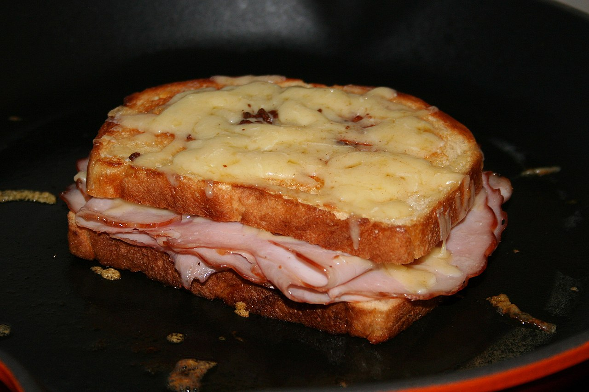

Croque Monsieur Recipe

Ingredients
For the Béchamel:
- 1/4 cup (4 tablespoons) unsalted butter
- 1/4 cup all-purpose flour
- 1 1/2 cups whole milk
- 4 teaspoons Dijon mustard
- 1 teaspoon Worcestershire sauce
- 1/8 teaspoon ground nutmeg
- Salt
- Freshly ground black pepper
For the Sandwich:
- 8 (1/2-inch thick) slices country-style French bread
- 8 slices (about 6 ounces) ham
- 1 1/2 cups grated Gruyère cheese
- 1 teaspoon herbes de Provence, optional
Method
- Gather the ingredients. Preheat oven to 425 F. Cover a baking sheet with parchment paper and set aside.
- Start by preparing the béchamel sauce. Melt the butter in a medium saucepan over medium heat until foamy. Add the flour and cook, stirring, until mixture is pale and foamy, about 3 minutes.
- Gradually add the milk, stirring until mixture is smooth. Cook, stirring, until sauce is thick and somewhat elastic, about 4 minutes.
- Remove from the heat and whisk in the Dijon mustard, Worcestershire sauce, and nutmeg. Season with salt and freshly ground black pepper, to taste.
- To assemble the croque monsieur, place four slices of the bread on the prepared baking sheet. Spread these bread slices with half of the béchamel sauce.
- Top each slice of bread with the ham and half of the Gruyere cheese.
- Top with the remaining four slices of bread and cover each of them with the remaining béchamel sauce.
- Top with the remaining Gruyere cheese and sprinkle with herbes de Provence, if desired. Bake until cheese is brown and bubbling, 10 to 15 minutes.
- Enjoy!